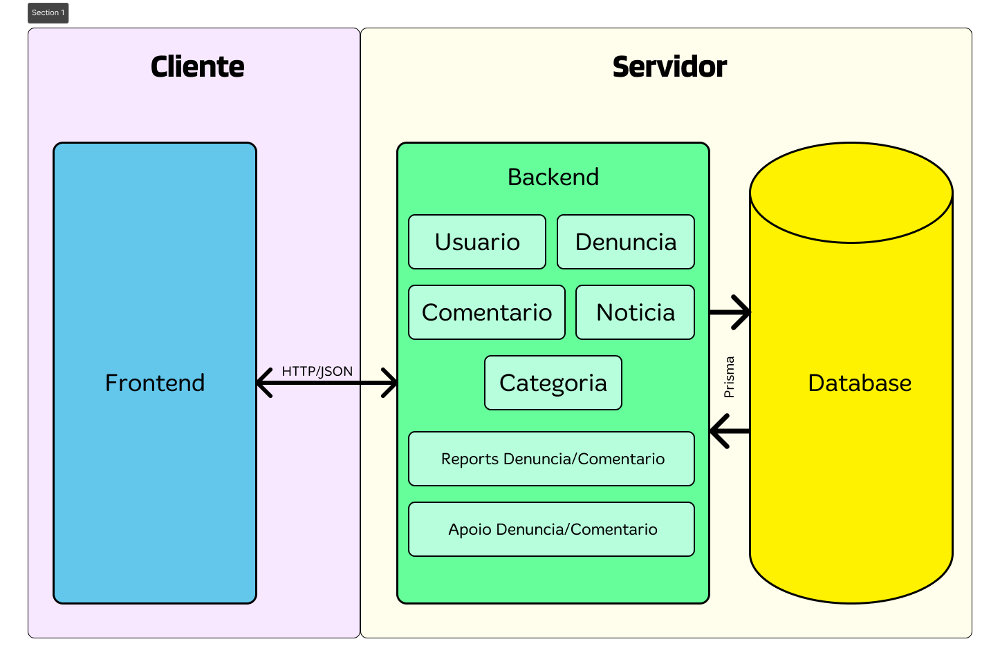
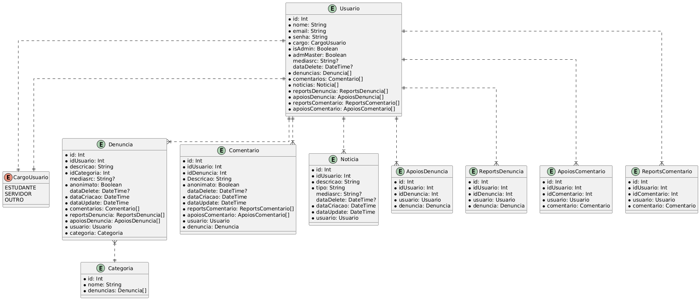

Representação Arquitetural
Descrição da Estrutura do Sistema
O sistema seguirá uma arquitetura Cliente-Servidor (Client-Server). Esta arquitetura é organizada em um formato de único repositório (Monorepo), que gerencia duas aplicações principais e independentes:
-
Cliente (Front-end): Uma aplicação Web de interface do usuário (UI/UX), desenvolvida em Next.js (React).
-
Servidor (Back-end): Uma aplicação de lógica de negócio e dados, desenvolvida em NestJS (Node.js).
O Servidor (Back-end) é implementado como um Monolíto Modular. Isso significa que é uma aplicação única e coesa, mas internamente organizada em módulos de domínio independentes (ex: denuncias, usuarios, auth), alinhando-se ao padrão de Arquitetura em Camadas (Layered Architecture).
A comunicação entre o Cliente e o Servidor ocorre exclusivamente através de uma interface de API bem definida, seguindo o padrão REST (Representational State Transfer), com troca de dados no formato JSON.
Justificativa das Tecnologias Adotadas
A escolha pela arquitetura Cliente-Servidor foi uma decisão deliberada para atender aos requisitos funcionais e não funcionais do projeto Guardiões da Universidade.
A justificativa detalhada baseia-se nos seguintes pilares:
-
Separação Estrita de Responsabilidades: Esta é a principal vantagem. A arquitetura permite uma divisão clara entre a camada de apresentação (Cliente) e a camada de lógica de negócio (Servidor).
- Front-end (Next.js): Foca exclusivamente na experiência do usuário (UX) e na interface (UI). Isso é crucial para atender aos Requisitos Não Funcionais de Usabilidade, como “Interface Intuitiva” e “Responsividade”. O front-end não contém regras de negócio ou acesso direto ao banco de dados.
- Back-end (NestJS): Foca exclusivamente na segurança, regras de negócio e persistência de dados. Isso é vital para cumprir os requisitos de “Segurança e Privacidade”, como Criptografia de Senhas, e “Conformidade Legal”, como a Lei Geral de Proteção de Dados Pessoais (LGPD).
-
Flexibilidade Tecnológica e Foco: A separação permite escolher a melhor ferramenta para cada trabalho.
- Next.js foi escolhido para o front-end por sua alta performance na renderização de interfaces React e seu ecossistema estruturado, atendendo ao requisito de “Responsividade”.
- NestJS foi escolhido para o back-end por ser um framework opinativo e modular, que força uma organização de código limpa (Controllers, Services), facilitando a manutenção, evolução e a implementação de padrões de segurança.
-
Desenvolvimento Paralelo e Manutenibilidade:
- Com a API REST servindo como um "contrato" estável entre o back-end e o front-end, permitindo que ambas as equipes trabalhem de forma paralela e independente sem bloquear uma à outra, otimizando o tempo de desenvolvimento.
- A organização do back-end em um Monolíto Modular foi preferida em vez de microserviços. Considerando o escopo atual do projeto, outras arquiteturas mais complexas como microserviços introduziriam uma complexidade operacional desnecessária (como o gerenciamento de múltiplos serviços e comunicações em rede). O monolíto modular oferece uma excelente separação lógica de domínios, por exemplo, módulos de Denúncias e Autenticação, garantindo a qualidade do código sem a sobrecarga de um sistema distribuído.
-
Escalabilidade Independente: A arquitetura permite que o servidor e o cliente sejam escalados de forma independente. Se a plataforma receber um grande número de denúncias, podemos escalar apenas a aplicação back-end para lidar com mais requisições, sem afetar a aplicação front-end.
Especificação Técnica
A arquitetura Cliente-Servidor do sistema "Guardiões da Universidade" é composta por três componentes principais: o Cliente (Front-end), o Servidor (Back-end) e o Banco de Dados. A aplicação é desenvolvida em um formato de Monorepo, que aloja as aplicações do Cliente e do Servidor no mesmo repositório, facilitando o desenvolvimento e o compartilhamento de tipos.
Componentes da Arquitetura:
-
Cliente (Front-end):
- Tecnologia: Next.js (React).
- Responsabilidade: Camada de apresentação, sendo a única interface direta com o usuário. É responsável por renderizar todas as telas, gerenciar o estado da interface (UI/UX) e lidar com a interação do usuário, não contém lógica de negócio crítica. Suas funções incluem atender aos requisitos de “Usabilidade”, como “interface intuitiva” e “responsividade”. A comunicação com o back-end é realizada via protocolos HTTP, utilizando Axios para requisições.
- Instanciação: Representa a aplicação front-end localizada na pasta
/Frontdo repositório.
-
Servidor (back-end):
- Tecnologia: NestJS (Node.js).
- Responsabilidade: É o núcleo da aplicação, responsável por toda a lógica de negócio, segurança e persistência de dados. Ele implementa a API REST consumida pelo usuário e segue internamente um padrão de Arquitetura em Camadas (Controllers, Services, Model) para garantir a separação de responsabilidades e atender ao requisito de “Manutenção e Evolução”. É também responsável por implementar todos os requisitos funcionais e de segurança, incluindo criptografia de senhas
- Instanciação: Representa a aplicação contida na pasta
/Backdo repositório, organizada em módulos conforme a arquitetura definida.
-
Banco de Dados (Database):
- Tecnologia: PostgreSQL, acessado por meio do ORM Prisma.
- Responsabilidade: É a camada de persistência de dados. É responsável por armazenar e recuperar todas as informações, incluindo usuários, denúncias, comentários, entre outros. O Prisma ORM garante o acesso tipado, seguro e consistente aos dados, facilitando a manutenção e reduzindo a possibilidade de erros.
Comunicação:
A comunicação entre o Cliente e o Servidor é feita exclusivamente através de uma API REST sobre o protocolo HTTP, usando Axios. O Cliente (Next.js) envia requisições HTTP (GET, POST, PATCH, DELETE) para os endpoints definidos no Servidor (NestJS). O Servidor processa a requisição, interage com o Banco de Dados (se necessário) e retorna uma resposta no formato JSON.

Tecnologias Utilizadas
O sistema Guardiões da Universidade utiliza um conjunto de tecnologias modernas focadas em escalabilidade, separação de responsabilidades e uma experiência de desenvolvimento robusta e manutenível:
Ferramentas de Suporte ao Desenvolvimento:
- GitHub: Utilizado para o versionamento do código-fonte, seguindo uma estratégia de Monorepo que aloja os códigos do Back-end e Front-end em um único repositório.
- Zenhub: Plataforma de gerenciamento de projetos integrada ao GitHub. É utilizada para organizar o Backlog do Produto, planejar as Sprints (Milestones) e acompanhar o fluxo de trabalho da equipe no Quadro de Tarefas.
- Jest: Framework de testes de JavaScript, utilizado para a criação de testes unitários e de integração, garantindo o cumprimento do requisito de testes.
Design e Front-end:
- Figma: Ferramenta de design colaborativo utilizada para a prototipação de baixa e alta fidelidade das telas (UI/UX), planejamento visual do roadmap e criação de diagramas de arquitetura.
- Next.js: O framework React escolhido para o desenvolvimento do Cliente (front-end). É responsável por toda a camada de apresentação (UI/UX), gerenciamento de estado da interface e o roteamento das páginas.
- React: Biblioteca JavaScript fundamental para a construção de interfaces de usuário componentizadas e reativas.
- Axios/Fetch: Clientes HTTP utilizados no front-end para realizar a comunicação e o consumo da API REST exposta pelo back-end.
Back-end
- NestJS: Framework Node.js escalável e modular escolhido para a construção do Servidor (back-end). Ele organiza a lógica de negócio em uma Arquitetura em Camadas (Controllers, Services).
- Prisma: ORM (Object-Relational Mapper) moderno, utilizado para fazer a interface segura e tipada entre a aplicação NestJS e o banco de dados PostgreSQL.
- PostgreSQL: Banco de dados relacional escolhido para a persistência e armazenamento de todos os dados da aplicação, como usuários, denúncias e comentários.
- JWT (JSON Web Tokens): Padrão utilizado para a autenticação e autorização da API. Garante que endpoints protegidos só possam ser acessados por usuários autenticados.
- Bcrypt: Biblioteca para hashing de senhas, garantindo que as senhas dos usuários sejam armazenadas de forma criptografada e segura, em conformidade com o requisito de segurança.
Metas e restrições arquiteturais
As metas e restrições arquiteturais são derivadas diretamente dos Requisitos Não Funcionais (RNFs) definidos no documento de requisitos do projeto. Eles atuam como diretrizes e restrições que moldam as escolhas de design e tecnologia.
Metas Arquiteturais baseadas nos RNFs:
-
Usabilidade:
- A arquitetura do front-end deve possibilitar a construção de uma interface intuitiva, garantindo que os fluxos críticos (como denúncia e cadastro) possam ser concluídos em até quatro etapas.
- O sistema deve ser totalmente responsivo, assegurando adaptação automática a diferentes resoluções e tamanhos de tela, incluindo desktops, tablets e dispositivos móveis.
-
Manutenção e Evolução:
- O código-fonte deve seguir padrões de clean code para ser legível e fácil de manter.
- A arquitetura do sistema deve ser devidamente documentada, incluindo descrições de endpoints, fluxos e componentes arquiteturais.
-
Segurança e Conformidade Legal:
- A arquitetura deve garantir que todas as senhas sejam armazenadas utilizando um algoritmo de hash seguro, assegurando que nenhuma senha seja gravada em texto plano.
- A arquitetura deve ser compatível com a LGPD, garantindo o consentimento do usuário e a capacidade de exclusão de dados.
Restrições Arquiteturais:
- Tecnologia do Back-end: O back-end será desenvolvido exclusivamente com o framework NestJS (Node.js).
- Tecnologia do Front-end: O front-end será desenvolvido exclusivamente com o framework Next.js (React).
- Banco de Dados: A camada de persistência utilizará o PostgreSQL como sistema de gerenciamento de banco de dados, com o Prisma como ORM.
Backlog do Produto (Escopo do Produto)
O funcionamento geral do sistema "Guardiões da Universidade" consiste em fornecer um canal duplo: um voltado denúncias e interações da comunidade e outro dedicado a orientações formais.
Os usuários podem se cadastrar, autenticar-se, publicar denúncias (de forma anônima ou identificada), além de comentar e reagir às postagens de outros membros. Paralelamente, têm acesso a uma área de orientações institucionais, com guias e links para os canais oficiais da universidade.
Administradores dispõem de uma interface de moderação e gerenciamento, permitindo o controle de conteúdo e de usuários.
Diversos requisitos do Backlog do Produto influenciaram diretamente a adoção de uma arquitetura Cliente-Servidor, com um back-end modular, favorecendo a escalabilidade, a segurança e a independência entre as camadas do sistema.
Essas decisões podem ser compreendidas a partir dos principais requisitos do Backlog do Produto, destacados a seguir:
-
Requisitos de Segurança e Domínios Separados: Considerando necessidade de funcionalidades críticas, como Autenticação de Conta e Administração, justificou a implementação de um back-end completo responsável por centralizar e proteger essa lógica, mantendo-a isolada da interface do usuário.
-
Requisitos de Usabilidade: A forte ênfase em uma Interface Intuitiva e Responsividade, justificou o uso de um framework de front-end moderno e dedicado (Next.js), o que é um pilar da arquitetura Cliente-Servidor.
-
Requisitos de Manutenibilidade: O requisito de Qualidade do Código influenciou a escolha do NestJS para o back-end, uma vez que sua arquitetura modular permite a criação de um monólito organizado por domínio, facilitando a manutenção e a evolução do sistema em comparação a uma abordagem baseada em microserviços, considerada excessiva para o escopo deste projeto.
-
Experiência da Equipe: A familiaridade da equipe com o ecossistema JavaScript/TypeScript, incluindo tecnologias como NestJS, React e Node.js, foi um fator determinante na escolha da stack. Esse alinhamento técnico permitiu um desenvolvimento mais ágil, colaborativo e eficiente, garantindo a entrega dentro dos prazos acadêmicos sem comprometer a qualidade do código.
Visão lógica
A visão lógica descreve a organização interna da aplicação, seus principais componentes de software e como eles interagem. Conforme a arquitetura Cliente-Servidor definida, o sistema é subdividido em dois pacotes de software principais: a aplicação Cliente (Front-end) e a aplicação Servidor (Back-end). Esta seção foca primariamente na visão lógica do Servidor (Back-end), que é um Monolíto Modular construído com NestJS.
- Módulos do Servidor (Back-end):
O back-end é subdividido em módulos que representam os principais domínios de negócio da aplicação. Esta abordagem garante a separação de responsabilidades e alta manutenibilidade. Os módulos principais são:
- app.module.ts: O módulo raiz que importa todos os outros módulos de funcionalidade.
- database (ou prisma): Módulo de infraestrutura responsável por prover a conexão com o banco de dados (PrismaService) para os outros módulos.
- autenticação (ou auth): Gerencia todas as funcionalidades de autenticação, como registro, login (geração de JWT) e recuperação de senha, além de prover os Guards de segurança.
- usuário (ou users): Gerencia o CRUD de usuários e a lógica de perfis.
- denúncias: Gerencia o CRUD e a lógica de negócio para as denúncias.
- categorias: Gerencia o CRUD dos tipos de denúncia.
- comentários: Gerencia o CRUD de comentários associados às denúncias.
- notícias: Gerencia o CRUD de notícias publicadas por administradores.
- apoios: Gerencia a lógica para "apoiar" denúncias e comentários.
- reports: Gerencia a lógica para "reportar" denúncias e comentários.
Diagramas e Pacotes
O diagrama de pacotes a seguir ilustra como os módulos do back-end se relacionam. A principal regra de dependência é que os módulos de funcionalidade dependem do módulo de infraestrutura (database), além de algumas relações de dependências entre eles, a depender do módulo.
O diagrama de pacotes a seguir representa as relações entre os módulos do back-end. A regra principal de dependência estabelece que os módulos de funcionalidade dependem do módulo de infraestrutura, responsável pela integração com o banco de dados. Além disso, podem existir dependências secundárias entre módulos específicos, quando há compartilhamento de entidades ou serviços comuns.

Comunicação entre Módulos:
A comunicação no sistema ocorre de duas formas distintas:
-
Comunicação Externa (Cliente -> Servidor): Realizada exclusivamente via API REST sobre o protocolo HTTP. O Cliente (Next.js) envia requisições em formato JSON para os endpoints definidos nos Controllers do Servidor (NestJS) garantindo a separação clara entre interface e lógica de negócio.
-
Comunicação Interna (Módulo -> Módulo): Implementada por meio do mecanismo de Injeção de Dependência do NestJS. Módulos que necessitam de funcionalidades de outros módulos (por exemplo,
DenunciasServiceutilizandoPrismaService) recebem essas dependências diretamente em seus constructors, mantendo a modularidade e facilitando a manutenção.
Camadas:
O sistema é organizado em camadas, cada uma com responsabilidades específicas, permitindo separação de interface, lógica de negócio e persistência de dados. A seguir, são apresentadas as principais camadas da aplicação:
-
Camada de Apresentação (Interface com Usuário): No contexto da arquitetura Cliente-Servidor, esta camada corresponde ao front-end desenvolvido em Next.js, totalmente separado do back-end. O protótipo de baixa fidelidade encontra-se disponível na aba de protótipo, servindo como referência para a interface e fluxos de usuário.
-
Lógica de Negócios e Regras de Negócio: Esta camada reside nos Services do NestJS, que contêm a lógica principal do sistema, e nos Controllers, que funcionam como a fachada da API, recebendo requisições HTTP e delegando o processamento para os Services. Essa separação garante modularidade, manutenibilidade e clareza na implementação das regras de negócio.
-
Comunicação com o Banco de Dados: É a camada responsável pela persistência e recuperação de informações, esta camada é gerenciada pelo Prisma ORM, que faz interface com o PostgreSQL, e encapsulada no PrismaService (módulo database). Os Services da camada de negócios interagem com o PrismaService, abstraindo operações SQL e garantindo consistência, segurança e integridade no acesso aos dados.
Visão de Dados (MER)
A persistência de dados do sistema é gerida por um banco de dados relacional (PostgreSQL) e abstraída pela aplicação através do ORM Prisma. O Modelo Entidade-Relacionamento (MER)* define a estrutura lógica dos dados, suas relações e restrições, garantindo consistência e integridade.

Entidades (Tabelas):
-
Usuario: Armazena as informações dos utilizadores da plataforma (nome, email, senha com hash, cargo, etc.). É a entidade central para autenticação e autoria.
-
Denuncia: A entidade principal do sistema. Armazena o conteúdo das denúncias (descrição, mediasrc), o estado (anonimato, dataDelete) e as suas ligações.
-
Categoria: Armazena os tipos de denúncia (ex: "Infraestrutura", "Segurança"). Esta tabela permite que os tipos sejam geridos dinamicamente pela administração.
-
Noticia: Armazena as postagens informativas criadas por administradores.
-
Comentario: Armazena os comentários realizados pelos usuários em cada denúncia, registrando autoria, conteúdo, data e vínculo com a denúncia correspondente.
-
ApoiosDenuncia / ReportsDenuncia (Tabelas de Junção): Gerem as relações N-para-N (muitos-para-muitos) entre Usuario e Denuncia, permitindo que um utilizador possa apoiar ou reportar várias denúncias, e uma denúncia possa ser apoiada ou reportada por vários utilizadores.
-
ApoiosComentario / ReportsComentario (Tabelas de Junção): Idênticas às anteriores, mas aplicadas à entidade Comentario.
Relações e Cardinalidades Principais:
- Usuario 1:N Denuncia: Um Usuario pode criar múltiplas Denuncias. Cada Denuncia pertence a apenas um Usuario.
- Usuario 1:N Comentario: Um Usuario pode fazer múltiplos Comentarios. Cada Comentario pertence a apenas um Usuario.
- Denuncia 1:N Comentario: Uma Denuncia pode ter múltiplos Comentarios. Cada Comentario está ligado a apenas uma Denuncia.
- Categoria 1:N Denuncia: Uma Categoria pode ser aplicada a múltiplas Denuncias. Cada Denuncia pertence a apenas uma Categoria.
- Usuario N:N ApoiosDenuncia N:N Denuncia: Relação de muitos-para-muitos que define os "apoios".
Atributos Principais:
| Entidade | Atributo | Tipo de Dado (Prisma/PostgreSQL) | Propósito e Observações |
|---|---|---|---|
| Usuario | id | Int (PK) | Identificador único do usuário. |
| nome | String | Nome completo do usuário. | |
| String | Email de login, não há um identificador unico pois aplicaremos um soft-delete. Mas o e-mail é único para usuário com dataDelete iguall a NULL | ||
| senha | String | Armazena o hash da senha. | |
| cargo | Enum (CargoUsuario) | Define o cargo do usuário (ESTUDANTE, SERVIDOR, OUTRO). | |
| isAdmin | Boolean | Flag booleana que indica se o usuário tem permissões de administrador. | |
| admMaster | Boolean | Flag para o administrador "root" do sistema, com permissões máximas. | |
| mediasrc | String? | URL para a foto de perfil do usuário. O ? indica que é opcional. | |
| dataDelete | DateTime? | Data da exclusão lógica (Soft Delete). Se null, o usuário está ativo. | |
| Denuncia | id | Int (PK) | Identificador único da denúncia. |
| idUsuario | Int (FK) | Chave estrangeira que referencia Usuario.id. O autor da denúncia. | |
| descricao | String | O texto descritivo completo da denúncia. | |
| idCategoria | Int (FK) | Chave estrangeira que referencia Categoria.id. | |
| mediasrc | String? | URL para mídia (foto/vídeo) anexa à denúncia. Opcional. | |
| anonimato | Boolean | Se true, a denúncia foi feita anonimamente (o idUsuario ainda é registrado, mas a UI não deve exibi-lo). | |
| dataDelete | DateTime? | Data da exclusão lógica (Soft Delete). | |
| dataCriacao | DateTime | Timestamp de quando a denúncia foi criada (@default(now())). | |
| dataUpdate | DateTime | Timestamp da última atualização (@updatedAt). | |
| Comentario | id | Int (PK) | Identificador único do comentário. |
| idUsuario | Int (FK) | Chave estrangeira que referencia Usuario.id. O autor do comentário. | |
| idDenuncia | Int (FK) | Chave estrangeira que referencia Denuncia.id. A denúncia que está sendo comentada. | |
| Descricao | String | O texto do comentário. | |
| anonimato | Boolean | Se true, o comentário foi feito anonimamente. | |
| dataDelete | DateTime? | Data da exclusão lógica (Soft Delete). | |
| dataCriacao | DateTime | Timestamp de quando o comentário foi criado. | |
| dataUpdate | DateTime | Timestamp da última atualização. | |
| Noticia | id | Int (PK) | Identificador único da notícia. |
| idUsuario | Int (FK) | Chave estrangeira que referencia Usuario.id. O administrador que postou a notícia. | |
| descricao | String | O corpo/texto da notícia. | |
| tipo | String | Um tipo ou categoria para a notícia (ex: "Aviso", "Evento", "Manutenção"). | |
| mediasrc | String? | URL para uma imagem de capa da notícia. Opcional. | |
| dataDelete | DateTime? | Data da exclusão lógica (Soft Delete). | |
| dataCriacao | DateTime | Timestamp de quando a notícia foi criada. | |
| dataUpdate | DateTime | Timestamp da última atualização. | |
| Categoria | id | Int (PK) | Identificador único da categoria. |
| nome | String (Unique) | Nome único da categoria de denúncia (ex: "Estrutural", "Acadêmico", "Assédio"). | |
| ApoiosDenuncia | id | Int (PK) | Identificador único do registro de apoio. |
| idUsuario | Int (FK) | Chave estrangeira que referencia Usuario.id. O usuário que apoiou. | |
| idDenuncia | Int (FK) | Chave estrangeira que referencia Denuncia.id. A denúncia que foi apoiada. | |
| Atributo Implícito | @@unique(...) | Tabela de Junção (0-para-N). Garante que um usuário só pode apoiar a mesma denúncia uma vez. | |
| ReportsDenuncia | id | Int (PK) | Identificador único do registro de report. |
| idUsuario | Int (FK) | Chave estrangeira que referencia Usuario.id. O usuário que reportou. | |
| idDenuncia | Int (FK) | Chave estrangeira que referencia Denuncia.id. A denúncia que foi reportada. | |
| Atributo Implícito | @@unique(...) | Tabela de Junção (0-para-N). Garante que um usuário só pode reportar a mesma denúncia uma vez. | |
| ApoiosComentario | id | Int (PK) | Identificador único do registro de apoio. |
| idUsuario | Int (FK) | Chave estrangeira que referencia Usuario.id. O usuário que apoiou. | |
| idComentario | Int (FK) | Chave estrangeira que referencia Comentario.id. O comentário que foi apoiado. | |
| Atributo Implícito | @@unique(...) | Tabela de Junção (0-para-N). Garante que um usuário só pode apoiar o mesmo comentário uma vez. | |
| ReportsComentario | id | Int (PK) | Identificador único do registro de report. |
| idUsuario | Int (FK) | Chave estrangeira que referencia Usuario.id. O usuário que reportou. | |
| idComentario | Int (FK) | Chave estrangeira que referencia Comentario.id. O comentário que foi reportado. | |
| Atributo Implícito | @@unique(...) | Tabela de Junção (0-para-N). Garante que um usuário só pode reportar o mesmo comentário uma vez. |
Visão de Implantação
Infraestrutura de Hardware
O software será implantado em um Servidor Virtual Privado (VPS) único. Esta abordagem foi selecionada para priorizar a centralização do controle e a simplicidade operacional. Diferentemente de arquiteturas de nuvem distribuídas a utilização de um VPS único consolida todos os recursos de software em um ambiente de fácil gerenciamento, sendo ideal para o escopo e os requisitos do projeto.
Tecnologias de Implantação
A estratégia de implantação é fundamentada nas seguintes tecnologias:
-
Docker (Containerização):
- Descrição: O Docker será empregado como a tecnologia central para a containerização (empacotamento) da aplicação (backend NestJS) e do serviço de banco de dados (PostgreSQL).
- Justificativa: A containerização é essencial para garantir a paridade entre os ambientes de desenvolvimento e produção. Isso mitiga discrepâncias de software e configuração, resolvendo problemas comuns de implantação e garantindo que o software se comporte de maneira previsível.
-
Docker Compose (Orquestração de Contêineres):
- Descrição: O Docker Compose será utilizado para definir e orquestrar a aplicação multi-contêiner.
- Justificativa: Esta ferramenta automatiza e simplifica o ciclo de vida da implantação. Através de um único arquivo de definição (docker-compose.yml), o Docker Compose gerencia a construção da imagem da aplicação, o provisionamento do contêiner do banco de dados, a configuração da rede interna entre os serviços e a inicialização de todos os componentes na ordem de dependência correta.
-
Node.js (Runtime da Aplicação):
- Descrição: O ambiente de execução JavaScript no lado do servidor, necessário para a execução do framework NestJS.
- Justificativa: O runtime Node.js será encapsulado dentro da imagem Docker da aplicação. Ele não será instalado diretamente no sistema operacional do host (VPS), garantindo o isolamento das dependências, a portabilidade da imagem e a consistência do ambiente de execução.
Infraestrutura de Banco de Dados
A infraestrutura de persistência de dados será implementada da seguinte forma:
-
SGBD (Sistema de Gerenciamento): PostgreSQL
- Descrição: O sistema de banco de dados relacional de código aberto PostgreSQL.
- Justificativa: A escolha é ditada pelo schema.prisma do projeto, que define uma estrutura de dados relacional. O PostgreSQL oferece robustez, escalabilidade e suporte avançado aos tipos de dados e relacionamentos (1-N, N-N) modelados para o sistema.
-
Infraestrutura: Contêiner Docker Co-localizado
- Descrição: O SGBD PostgreSQL será executado como um contêiner Docker provisionado dentro do mesmo Servidor Virtual Privado (VPS) que a aplicação.
- Justificativa: Esta abordagem representa uma alternativa economicamente eficiente e operacionalmente simples aos serviços gerenciados de Banco de Dados como Serviço (DBaaS). O Docker Compose será responsável por gerenciar o ciclo de vida do contêiner do banco de dados e a comunicação de rede entre este e o contêiner da aplicação. A string de conexão (DATABASE_URL) da aplicação NestJS referenciará o nome do serviço do banco de dados na rede interna do Docker, assegurando uma arquitetura coesa e autocontida.
Restrições adicionais
Existem restrições de negócio e de qualidade de software (Requisitos Não Funcionais) que guiam o desenvolvimento e a arquitetura do sistema.
Restrições de Negócio:
- Acesso Controlado: O acesso à maioria das funcionalidades críticas (criar denúncia, comentar, editar perfil) deve exigir que o utilizador esteja autenticado.
- Canal Não-Oficial: A plataforma deve informar os utilizadores de que se trata de um canal não-oficial da universidade, e o seu propósito principal é dar voz à comunidade e orientar para os canais competentes.
Restrições de Qualidade de Software (Requisitos Não Funcionais):
O sistema deve aderir estritamente aos seguintes Requisitos Não Funcionais:
-
Usabilidade:
- A interface deve ser intuitiva, com fluxos críticos realizados em até 4 passos.
- Ações críticas e irreversíveis (ex: cancelar denúncia) devem exigir confirmação explícita do utilizador.
-
Manutenção e Evolução:
- O código deve seguir padrões de clean code e ser adequadamente documentado.
- A documentação da API e da arquitetura deve ser mantida atualizada para facilitar a integração e manutanção.
-
Conformidade Legal:
- O sistema deve estar em conformidade com a LGPD, apresentando uma política de privacidade clara e obtendo consentimento ativo do utilizador no cadastro.
- Segurança e Privacidade:
- Todas as senhas de utilizador devem ser armazenadas no banco de dados utilizando um hash seguro.